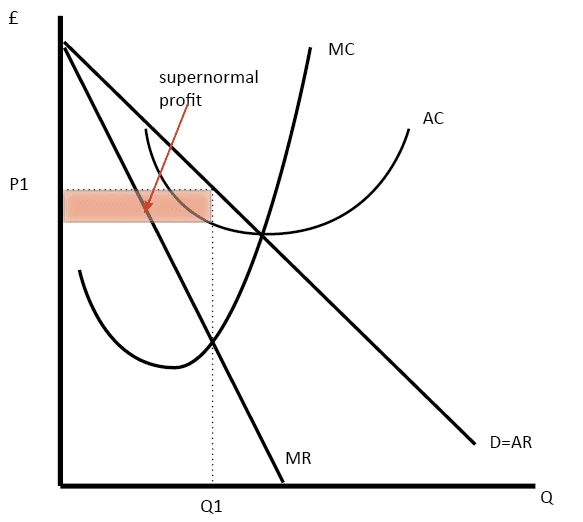
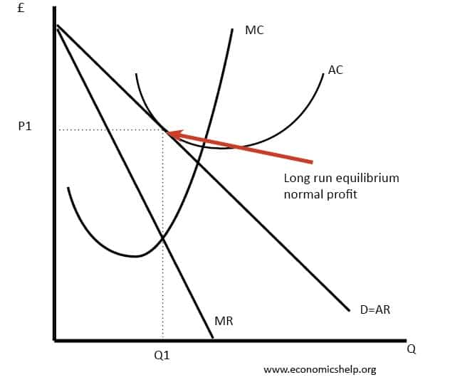

Monopolistic Competition
Monopolistic competition is a market structure in which many firms sell products that are similar but not identical. Examples of markets with this market structure are restaurants, education services, health services, and accommodation services.
Key Features
- Freedom of Entry and Exit of Market
- Product Differentiation
- Multiple Firms
- Non-Price Competition
In the Short Run:
In the short run, a monopolistically competitive firm behaves much like a monopoly. Because each firm sells a differentiated product, it faces a downward-sloping demand curve and maximizes profit by producing the quantity where marginal revenue equals marginal cost, then charging the highest price consumers are willing to pay for that quantity.
Depending on whether the resulting price is above or below average total cost, the firm may earn a profit or incur a loss. Thus, in the short run, monopolistic competitors set output and price in the same way as monopolies, and their profitability depends on the relationship between price and average cost.
In the Long Run:
In the long run, monopolistic competition differs from monopoly because economic profits attract new entrants. As more firms enter with similar but differentiated products, each existing firm’s demand curve shifts left as customers are spread across more competitors. This process continues until any short-run profits are competed away.
In the long run, firms produce where marginal revenue equals marginal cost, but the price they can charge falls to the point where it equals average total cost. As a result, monopolistically competitive firms earn zero economic profit in the long run, though they still have some market power due to product differentiation.
Monopolistic vs Perfect Competition
Monopolistic and perfect competition differ in two key ways in the long run: excess capacity and mark-up.
Excess Capacity:
Free entry pushes monopolistically competitive firms to a point where their demand curve is tangent to their average total cost curve. At this output level, they produce less than the quantity that minimizes average total cost. This means they operate with excess capacity—they could produce more and lower their average cost but do not because of the downward-sloping demand they face. In contrast, perfectly competitive firms produce at the minimum of average total cost, achieving the efficient scale.
Mark-Up:
Perfectly competitive firms charge a price equal to marginal cost. Monopolistically competitive firms, however, charge a price above marginal cost because they retain some market power through product differentiation. Even though firms earn zero economic profit in the long run under both market structures, monopolistic competitors can still sustain this price–marginal cost gap. This occurs because long-run equilibrium forces price to equal average total cost, not marginal cost, and these firms operate where marginal cost is below average total cost.
As a result, perfectly competitive firms are indifferent to selling an additional unit at the going price, while monopolistically competitive firms always want more customers since each extra sale generates some positive profit.
Monopolistic Competition and the Welfare of Society
Monopolistic competition does not achieve the same level of economic efficiency as perfect competition, and this affects overall social welfare.
Because firms charge a price above marginal cost, some consumers who would value the product more than its cost of production are priced out of the market. This creates a deadweight loss similar to that of monopoly pricing. While this is inefficient, regulating firms to force marginal-cost pricing is impractical: differentiated products are widespread, the administrative burden would be huge, and forcing lower prices would push firms—already earning zero economic profit—into losses that the government would need to subsidize.
Monopolistic competition can also lead to an inefficient number of firms in the market. Entry creates two opposing externalities:
Product variety externality (positive): consumers benefit from additional product variety;
Business-stealing externality (negative): new firms take customers and profits from existing firms.
Because firms only consider their own profits, they ignore both externalities, which means the market may end up with too many or too few firms relative to what is socially optimal.
Overall, monopolistic competition does not maximize total surplus, but the inefficiencies are difficult to identify and costly to fix. As a result, public policy offers limited scope for improving outcomes, and society generally tolerates these imperfections.
Advertising and Branding
In monopolistic competition, firms sell differentiated products and charge prices above marginal cost, giving them a strong incentive to advertise and build brand loyalty. Advertising helps firms attract more customers by highlighting the distinct features of their products.
The level of advertising varies widely across industries. Firms selling highly differentiated consumer goods—such as cereals, cosmetics, soft drinks, or over-the-counter medicines—often devote 10–20% of their revenue to advertising. In contrast, sellers of industrial goods advertise far less, and firms producing homogeneous products like wheat or crude oil typically do not advertise at all.
Overall, advertising and branding are central features of monopolistic competition because they help firms stand out in markets where products differ and competition is based on more than just price.
Graph of Monopolistic Competition in the Short Run:
Graph of Monopolistic Competition in the Long Run:
Case Study
Coffee Shops/Cafés in Ireland
The Irish coffee-shop market, made up of chains like Insomnia, Starbucks, Costa Coffee, Butlers Chocolate Café, and many independent cafés, is a strong example of monopolistic competition, where many firms sell similar but differentiated products.
- Product Differentiation:
Coffee shops offer similar core items but stand out through branding, ambience, quality of coffee, menu variety, and customer experience. - Low barriers to entry and exit:
New cafés can open relatively easily, and underperforming ones can close without major losses, keeping the market very competitive. - Non-Price Competition:
Firms compete more through loyalty programmes, décor, ethical sourcing, and service quality rather than strictly on price.